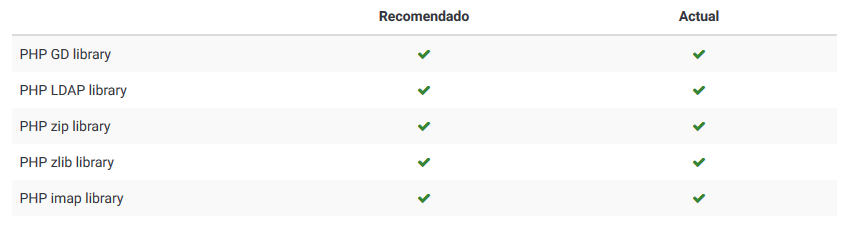
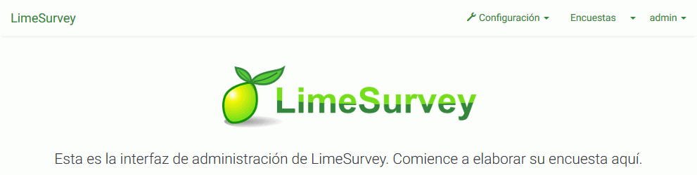
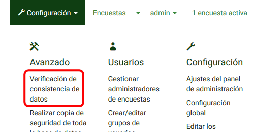
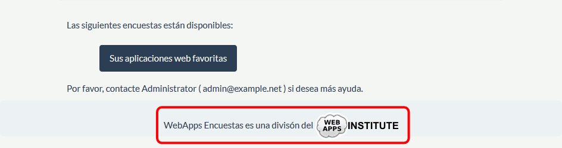
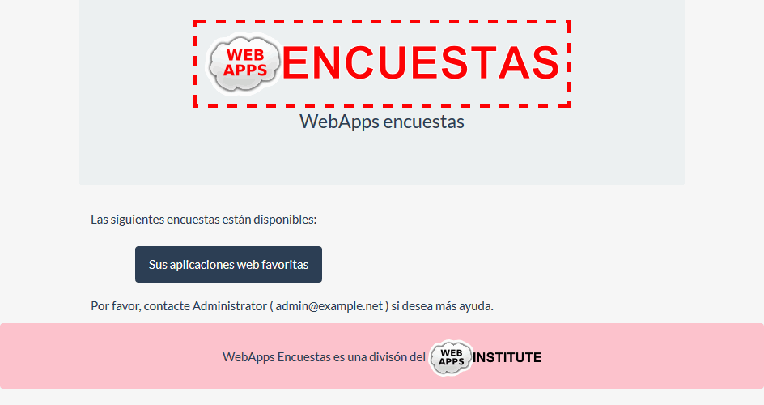

Entre en phpMyAdmin como usuario root y cree un usuario de MySQL con nombre iaw_limesurvey_1, contraseña iaw_limesurvey_1 y base de datos iaw_limesurvey_1.
Abra en el navegador /limesurvey e inicie la instalación.
Resuelva las advertencias iniciales y haga una captura de toda la pantalla en la que se vea que se han resuelto las advertencias iniciales:

Instale Lime Survey creando el usuario administrador admin y contraseña admin.
Haga una captura de toda la pantalla una vez instalado, tras entrar como administrador:

2. Nombre, logo y favicon del sitio
Cambie el nombre del sitio (WebApps encuestas) usando el interfaz de la aplicación.
Traduzca "Check data integrity" por "Verificación de consistencia de datos".
Haga una captura de toda la pantalla mostrando la traducción de la cadena en poedit.
Sustituya el archivo de traducción en LimeSurvey.
Haga una captura de toda la pantalla mostrando el menú traducido:

6. Cambiar la plantilla
Haga una copia de la plantilla default y llámela con su nombre, usando el interfaz de la aplicación.
Haga una captura de toda la pantalla de la página en la que se puede editar la nueva plantilla.
Añada la imagen a la plantilla, usando el interfaz de la aplicación.
Haga una captura de toda la pantalla en la que se vea que se ha subido la imagen.
Modifique el archivo surveylist.pstpl de manera que el pie de página sea el siguiente:

Haga una captura de toda la pantalla de la página en que se vea el código modificado.
7. Cambiar el aspecto visual
Cambie el aspecto visual de LimeSurvey (borde punteado de la imagen, fondo rosa del pie y espacio alrededor del texto del pie, modificando la hoja de estilo de la plantilla usando el interfaz de la aplicación.

Haga una captura de toda la pantalla mostrando las modificaciones realizadas en la hoja de estilo (una captura es suficiente si se escriben las reglas al final de la plantilla).
Haga una captura de toda la pantalla mostrando el resultado.
8. Alias
Cree un alias para poder acceder a Lime Survey mediante la dirección http://localhost/limesurvey.
Escriba un fichero alias.txt con el alias que ha creado.
Haga una captura de toda la pantalla mostrando que funciona el alias.
9. Copia de seguridad
Como usuario iaw_limesurvey_1 haga una copia de seguridad de la base de datos.